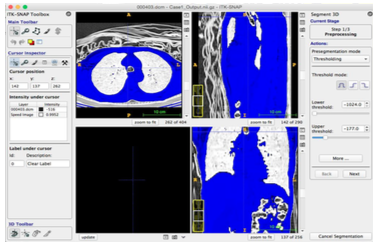

Nayana Kamath J.
Currently pursuing Masters in Computer Science at SFSU.
Resume:
PDF
Academic projects:
At SFSU...
TableMark Homepage
Software Engineering
Developed a website for Restaurant reservation
Familiarized with major Software Engineering processes followed during the website development,
starting from mockups and storyboards, regular scrum meetings and milestone deliveries to final product delivery.
The website is hosted on Amazon cloud:
TableMark
Available parking and street cleaning info
Software Development
Developed an android application to locate the available parking spots in SF using Google maps and SF Park API.
Executive summary and screenshots of the app:
PDF
TOS Shell and Train simulator
Advanced OS
Worked on a Train Operating System to control a model train on a simulator.
Summary:
PDF

Thresholding, Region growing and segmentation of lungs
Biomedical Image Analysis
Worked on a medical imaging system for segmentation, registration and quantification of CT scan images.
Project Report:
PDF
At VJCET...
Undergraduate Project
Worked on a software to secure users from accessing illegal contents online using a machine learning model.
The software was designed to store user details on the Java RMI server and grant access only to authorized users.
Used the machine learning model and naive similarity finder algorithm, to check if the captured screenshots were illegal.


{kind=link}
{kind=link}
{kind=link}
{kind=link}
{kind=link}
{kind=link}
{kind=link}